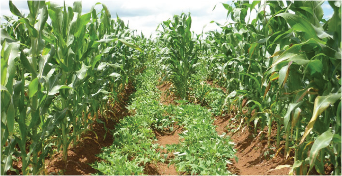
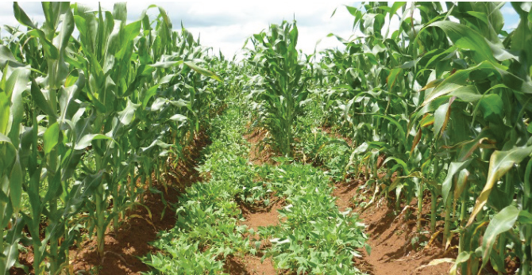

Agriculture for Secondary Schools
Management of viral diseases: These diseases can be managed by planting
virus-free sweet potato cuttings obtained from reputable sources; rotating sweet
potatoes with non-host crops to disrupt the virus transmission cycle; removing
and destroying infected plants and crop residues to minimise sources of viral
infection; controlling weeds that could serve as alternative hosts for viruses and
vectors.
Activity 4.3
1. Pay a visit to your school farm or nearby sweet potato fields; observe and
perform the following tasks:
(a) Identify some common pests and diseases affecting a sweet potato crop;
(b) Observe effects caused by the identified pests;
(c) Study methods that are used to manage the identified pests, including
vermin; and,
(d) Adopt manageable measures and apply them in the field for a sweet
potato.
Other agronomic practices
Intercropping is another managerial practice commonly applied in sweet potato
fields. The crop can be intercropped with cassava, maize, beans, cowpeas, and
groundnuts (Figure 4.8). This practice reduces pest and disease incidence and
improves soil fertility and productivity.

Figure 4.8: Sweet potato intercropped with maize
Source: https://farmbizafrica.com/maize-sweet-potato-intercropping-improves-income-nutrition/